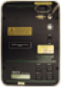

Rad7 Radon Monitor


The RAD7 is a highly versatile instrument that can form the basis of a comprehensive radon measurement system. It may be used in many different modes for different purposes. While you can start to make simple measurements on the first day of ownership of the RAD7, it can take years to master the subtleties. To appreciate the full capabilities of the instrument it is vital that you read the manual.When a test is LIVE there is not much that you can do as most of the dialog’s functions are disabled. It is possible to stop the test anytime to dump the existing data to a file or to the status log. If the Erase Data option is NOT selected you can then just restart the test and the Rad 7 will just continue counting into the current cycle.
If you wish to stop a test early you must select the Erase Data option before starting the next test. Otherwise the Rad 7 will continue using the previous setting until the total number of cycles needed to complete the previous protocol have been completed.
Data Formats
The Rad7 object does not produce an ORCA data record at this time.


The protocol settings are preset except for the NONE protocol.
A special protocol set up can be saved and then recalled as the USER protocol.
The Rad7’s protocol settings can be read back into this dialog with this button. You should rarely have to do this.
Prints the current unfinished cycle’s data to the status log
If the Erase Data option is selected, all data will be deleted at the start of a run
At the end of a run the data set can be printed to the status log or stored to a file
The current run’s polling rate
Note the high relative humidity in this test. The desiccant needs to be replaced.